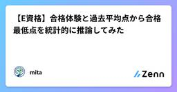
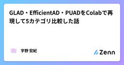
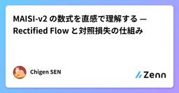

Zennの「ディープラーニング」のフィード
フィード

【Keras実験】ReLU・LeakyReLU・ELU・GELUを比較｜活性化関数の選び方
Zennの「ディープラーニング」のフィード
「活性化関数って結局どれを使えばいいの？」MNISTで4種類を同条件で実験した結果をまとめます。結論：迷ったらReLU、精度を追うならGELUです。 比較した4種類関数特徴主な用途ReLUシンプル・高速。死んだReLU問題あり画像分類全般LeakyReLU負領域も小さく通す。死んだReLUを防止ReLUの代替ELU負領域で指数的に変化。収束が速い深いネットワークGELUガウス分布ベースのスムーズな応答BERT・Transformer系 死んだReLU問題とはReLUは負の入力に対して常に0を返すため、一度活性化され...
13時間前

【Keras実験】学習率スケジューラ5種を比較｜ReduceLROnplateau・CosineDecay・OneCycleなど
Zennの「ディープラーニング」のフィード
「学習率スケジューラって種類が多くてどれを使えばいいかわからない」MNISTで5種類を同条件で実験した結果をまとめます。結論：迷ったらReduceLROnPlateauが最も安定でした。 比較した5種類スケジューラ特徴StepDecay一定エポックごとに段階的に減少ExponentialDecay指数関数的に滑らかに減少ReduceLROnPlateau改善が止まったときだけ自動で減少CosineDecayコサイン波形に沿って滑らかに減少OneCycleScheduler最初に増加→その後急激に減少 実験結果MNIS...
1日前

【Keras実験】AdamWとは？Adamとの違いを実験で比較｜迷ったらAdamWの理由
Zennの「ディープラーニング」のフィード
「AdamとAdamWって何が違うの？」「どっちを使えばいいの？」実験結果をもとに答えます。結論：迷ったらAdamWです。 AdamWとは？AdamW（Decoupled Weight Decay Regularization）は2017年に提案されたAdamの改良版です。Adamとの違いは1点だけです。項目AdamAdamWWeight Decayの扱い勾配更新に含まれる独立して適用汎化性能やや劣る良好過学習への耐性弱め強めAdamはL2正則化を勾配更新に組み込むため、減衰効果が不安定になりやすいです。AdamWは重み減衰...
2日前

Dense層（全結合層）とは？畳み込み層との違いをわかりやすく解説【Keras】
Zennの「ディープラーニング」のフィード
KerasでCNNを書くとき、必ず登場するDense層。「なんとなく使っているけど仕組みがよくわからない」という方向けに、畳み込み層との違いを中心にまとめます。 Dense層とは？Dense層（全結合層） とは、前の層のすべてのノードと結合し、重み付き和を計算する層です。計算式はシンプルです。出力 = 活性化関数（入力ベクトル × 重み行列 + バイアス）入力が3個・出力が2個なら、3×2＝6個の重みが学習対象になります。 畳み込み層（Conv層）との違い項目Dense層Conv層接続方式全結合（全ノードが繋がる）局所結合（カーネルで一部を見る）...
2日前

E資格「最短合格」へのリファクタリング・ノート【Java屋の視点】
Zennの「ディープラーニング」のフィード
【著者のスタンス】私はJavaを中心としたバックエンドエンジニアです。AI特有の「ふんわりした数式」やPythonの「動的な挙動」にはイライラしました。だからこそ、「Javaエンジニアが納得できるように、論理的に、かつシステム的に」AIの知識を再構築してノートにまとめました。これは、天才データサイエンティストのための本ではありません。「現場で戦うエンジニアが、E資格という壁を最短で突破するための武器」です。無駄を嫌い、効率的に合格点を取りたい多忙なエンジニア向け。学習のボトルネック（数式）を解消し、合格ラインへ最速で到達するための思考のログ。
2日前

【E資格】合格体験と過去平均点から合格最低点を統計的に推論してみた
Zennの「ディープラーニング」のフィード
目次初めに結論本試を受けた感想勉強方法と勉強時間ボーダーの推定まとめ 初めに2026年2月に開催されたE資格に合格しました。この記事は合格体験記...だけでなく「過去の統計データ」と「試験本番の体感」を掛け合わせ、ブラックボックスである『合格最低点』を統計学的に推測しています。E資格は各科目の平均点こそ公開されますが、以下の情報は非公開という「不親切な試験」でもあります。合格ボーダーは何点なのか？各分野の配点比率はどうなっているのか？「AIの専門家になりたい」という方はもちろん、「転職や社内評価のために、多忙な中で最短ルートの合格を掴み取りたい」...
3日前

GLAD・EfficientAD・PUADをColabで再現して5カテゴリ比較した話
Zennの「ディープラーニング」のフィード
はじめに産業異常検知の論文実装を比較しようとすると、実際には「モデルの中身」より先に、公開実装がそのまま動かないColab だと依存関係が壊れる手法ごとに出力形式や評価指標が違うimage-level と pixel-level を分けて見ないと比較にならないといった問題にぶつかります。今回は、代表的な3手法であるGLADEfficientADPUADを対象に、**MVTec-AD の 5カテゴリ（bottle / cable / capsule / pill / grid）**で比較実験を行いました。この検証では、単に公開コードを実行するだけでなく、...
3日前
From LSSL to S4: How Structured State Spaces Became Practical
Zennの「ディープラーニング」のフィード
From LSSL to S4: Understanding the Math Behind Structured State Space ModelsA deep dive into how State Space Models evolved from an elegant but infeasible idea into a practical architecture for modeling long sequences. Why State Space Models?A central problem in sequence modeling is effici...
4日前
サルの神経細胞から学んだ「ポケットサイズAI脳」の衝撃
Zennの「ディープラーニング」のフィード
📌 3行でわかるこの記事研究者がサルの視覚神経データを元にAIモデルを1/1000に圧縮することに成功人間の脳は電球以下の電力で動くが、AIは膨大な電力を消費 — この差を解明する鍵がV4神経細胞にあるNature誌に掲載されたこの研究は、エッジAIや自動運転の効率化に大きな可能性を提示 はじめに人間の脳は、電球一個分（約20ワット）未満の電力で動作しています。一方、現代のAIシステム、特に大規模言語モデル（LLM）や画像認識モデルは、膨大な電力を消費します。この「効率の差」に科学者がついに一歩近づきました。2026年3月、Nature誌に掲載された研究[1]で...
4日前

MAISI-v2 の数式を直感で理解する — Rectified Flow と対照損失の仕組み
Zennの「ディープラーニング」のフィード
MAISI-v2 を読んで数式と直感を整理してみた はじめにNVIDIAが提案した MAISI-v2（Medical AI for Synthetic Imaging v2）を読み込みました。画像生成×医療×数式 という組み合わせで、個人的に理解を深めるために整理した記事です。対象読者: 拡散モデルの基礎知識がある方、医療画像合成に興味がある方論文: MAISI-v2: arXiv:2508.05772コード: https://github.com/NVIDIA-Medtech/NVGenerate-CTMR/tree/main MAISI-v2 とは3D医療画...
4日前
第9回: NN基礎&変分推論&ELBO — Python地獄からRust救済へ 【後編】実装編
Zennの「ディープラーニング」のフィード
📖 この記事は後編（実装編）です 理論編は 【前編】第9回 をご覧ください。🎯 この記事で得られるものPython ELBO実装の限界を体感（GIL・メモリコピー問題）Rust所有権・借用・ライフタイムの基礎理解ゼロコピー（&[f64]）による50x高速化の実感ELBO各項のMath↔Code 1:1対応REINFORCE vs Reparameterization の分散比較実験 💻 Z5. 試練（実装）（45分）— Python の限界と Rust の力 5.1 Python による ELBO 計算まずは Python で VAE の ELB...
5日前
モデル反転攻撃について [AIセキュリティ]
Zennの「ディープラーニング」のフィード
モデル反転攻撃とはなにかモデル反転攻撃とは、機械学習モデルが持つパラメータ・出力・勾配などの情報から、学習データの特徴を逆算して復元する攻撃のことです。特に深刻なのは、顔認識モデル→学習に使われた人物の顔画像を復元医療モデル→患者の特徴量を推定LLM→学習データの一部を再構成といったケースです。 なぜ「反転」が可能なのか機械学習モデルは、学習データの統計的特徴を内部に保持します。特に 過学習(overfitting) や 高容量モデル では、データの特徴がパラメータに強く刻み込まれます。例えば分類モデルf_{\theta }(x)があるとします。学...
7日前
Grokkingを10分で再現する — モデルが"突然目覚める"瞬間を可視化で追う
Zennの「ディープラーニング」のフィード
0. 要約Grokkingとは、訓練データを丸暗記したモデルが、学習を続けるうちにある瞬間「理解」に目覚め、未知のデータにも正解できるようになる現象1層Transformerに (a + b) mod 113 を学習させると、モデルは誰にも教わらず「足し算を円上の回転の合成として解く」というアルゴリズムを自力で再発見する訓練中の内部を可視化すると、Embedding・Attention・MLPが暗記用のノイズから美しい周期パターン（Fourier乗算回路）へ変身していく過程が見えるGrokkingが起きない原因は、Softmax Collapseによる勾配消失だった（Pri...
8日前

ディープラーニングの異常検知ライブラリ「Anomalib v2.2.0」の環境構築でハマった話
Zennの「ディープラーニング」のフィード
はじめに監視カメラ画像の異常検知処理の実装に、軽量なディープラーニングアルゴリズムを使おうと、Anomalib を動かそうとしたら、やたらエラーがでたので、その内容と解決策を共有しつつ、環境構築の手順、簡単なサンプルコード、実行結果を紹介したいと思います。 1. Anomalib って？Anomalibは、Intelが開発を主導している、オープンソースのディープラーニングアルゴリズムのうち、異常検知を目的としたものを集めたライブラリです。https://anomalib.readthedocs.io/en/v2.2.0/index.htmlライブラリには、異常検知を行うモ...
8日前
自力でaiを作る！！！【python】
Zennの「ディープラーニング」のフィード
はじめにこんにちは今回はnumpyを主軸にtorchなどを使わずに自力で気温予測ai（深層学習）を作ったのでそれについて書きます（数式が出ても逃げないでね） まずai（深層学習）の仕組みとは深層学習のaiは基本的に複数のニューロン（変換装置みたいなもの）によって作られています↓イメージ図 丸いのがニューロンこのニューロンは入力層、隠れ層、出力層の３つ種類に分けられますそしてこのニューロンとニューロンの間の線には一つ一つ重みとバイアスという数値があります（重みとバイアスの初期値はランダムに設定されていることが多い）流れとしてはデータを入力層のニューロンに入れる↓...
9日前
SimCLR 論文解説 ＆ PyTorch 実装（Contrastive Learning / 自己教師あり学習）
Zennの「ディープラーニング」のフィード
SimCLR 論文解説 ＆ PyTorch 実装（Contrastive Learning / 自己教師あり学習）本稿では、視覚表現のコントラスト学習のためのシンプルな枠組みである SimCLR (Simple Framework for Contrastive Learning ) を紹介する。SimCLRは、近年提案されているコントラスト型の自己教師あり学習アルゴリズムを、 特別なアーキテクチャ や メモリバンク を必要とせずに簡素化した手法である。引用元:https://research.google/blog/advancing-self-supervised-an...
11日前
数式とPythonで理解するTransformerのAttention機構
Zennの「ディープラーニング」のフィード
はじめにChatGPT Claude Geminiなどの大規模言語モデルを支える「Transformer」。その中核を担うのがAttention（アテンション）機構です。一見すると複雑な魔法のように思えるAttentionですが、その正体は「入力されたデータのどの部分に『注目（Attention）』すべきかを動的に計算する」 ための、非常にシンプルな行列計算の組み合わせです。本記事では、Attentionの概念を数式を交えて紐解きながら、それをそのままPythonコードとして実装することで、仕組みを根本から理解することを目指します。 1. 埋め込み表現としての入力N ...
12日前
LoRA・QLoRA完全マニュアル ─ 2026年のLLMファインチューニング実装ガイド
Zennの「ディープラーニング」のフィード
ファインチューニング戦国時代の2026年2024年時点では、LLMのファインチューニングは「高コスト・高技術」でした。2026年現在、状況は大きく変わっています。個人開発者でもノートパソコンで、わずか数千円のGPUレンタル費でエンタープライズ品質のカスタムLLMを作れるようになったのです。本記事では、実装レベルで検証したLoRA・QLoRA・完全ファインチューニングの3手法を、数学的背景から実装、デプロイまで解説します。 ファインチューニングが必要な理由：3つのシナリオ シナリオ1：業界特有の知識・文体例：医療関連企業- 医学用語が豊富- 症例研究の事例多数- 規...
12日前
時系列異常検知：NASA SMAP / MSL を使った 4 モデル比較（コード解説）
Zennの「ディープラーニング」のフィード
対象読者: 時系列異常検知に興味があるエンジニア／研究者。PyTorch の基本が分かれば読みやすいと思います。 初めにNASA の SMAP / MSL データセット（多変量時系列）のごく一部のデータを使い、再構成／次時刻予測ベースで異常検知を行いました。比較したモデルは NGRC (次世代リザバー) / ESN (Echo State Network) / RNN / LSTM の 4 種類。評価指標は点ごとの Precision / Recall / PR-AUC、平均検出遅延など。実装は Jupyter Notebook（https://github.com/Isk...
14日前
第9回: NN基礎&変分推論&ELBO — Python地獄からRust救済へ 【前編】理論編
Zennの「ディープラーニング」のフィード
🎯 この記事で得られるものNN基礎（MLP/CNN/RNN）の数学的理解 — 順伝播・逆伝播・勾配消失の完全導出変分推論の動機とELBO導出（3視点: Jensen / KL分解 / 重点サンプリング）ELBO分解（再構成項 + KL正則化項）の直感とRate-Distortion視点勾配推定量（REINFORCE vs Reparameterization）の理論と分散の桁違いの差Amortized Inferenceの概念（VAEへの布石）とAmortization Gap 第9回: NN基礎（MLP/CNN/RNN）& 変分推論 & ELBO...
15日前